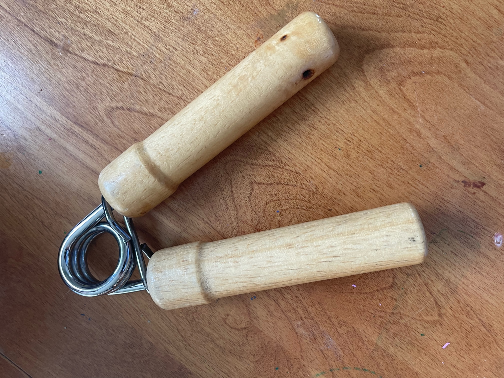
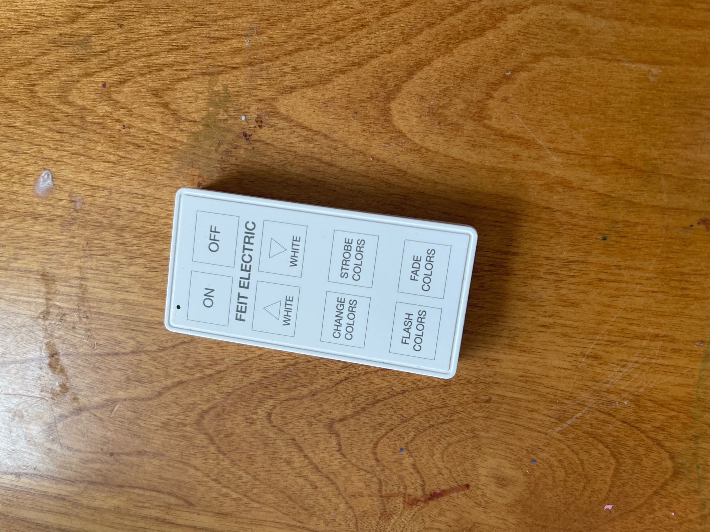
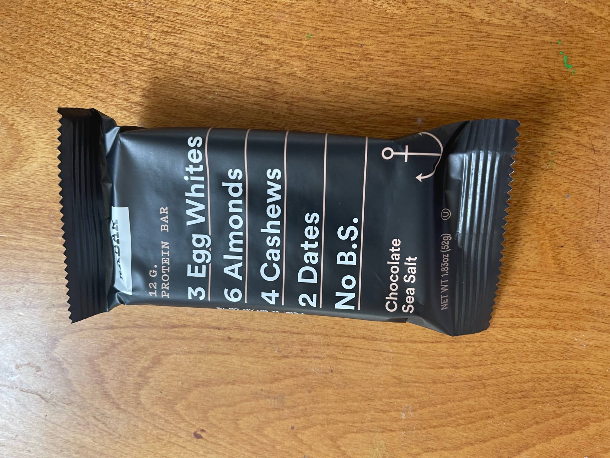
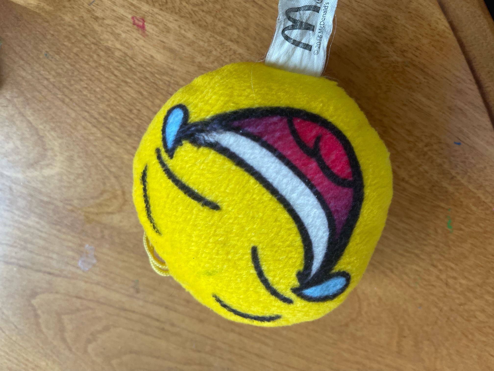
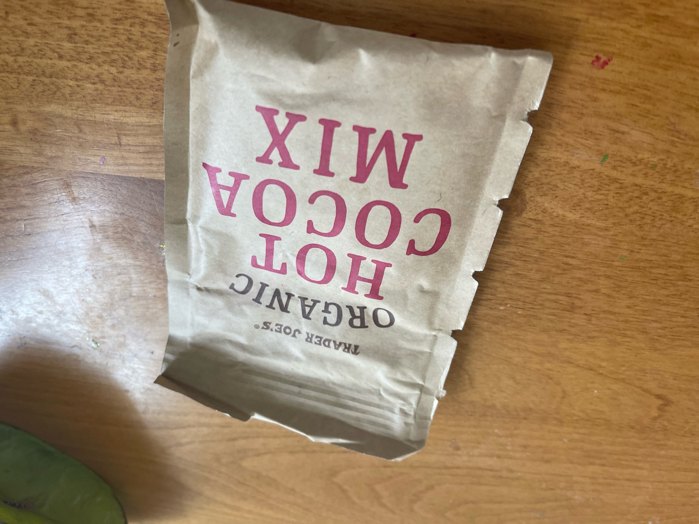

Real Time Image Identification Case Study
MobileNet VS Google Lens
We are testing these two indentifiers with 10 images
Object :
Accuracy of Google Lens and MobileNet

The accuracy pf the google lens was correct and the Mobilenet was incorrect saying it was a vaccum cleaner

The accuracy of the google lens was correct and the Mobilenet was incorrect saying it was a spot light

The accuracy of the google lens was correct and the Mobilenet was incorrect saying it was a water bottle

The accuracy of the google lens was correct and the Mobilenet was incorrect saying it was a television system

The accuracy of the google lens was correct and the Mobilenet was incorrect saying it was a seat belt
I believe that google lens is better as shown with my data.